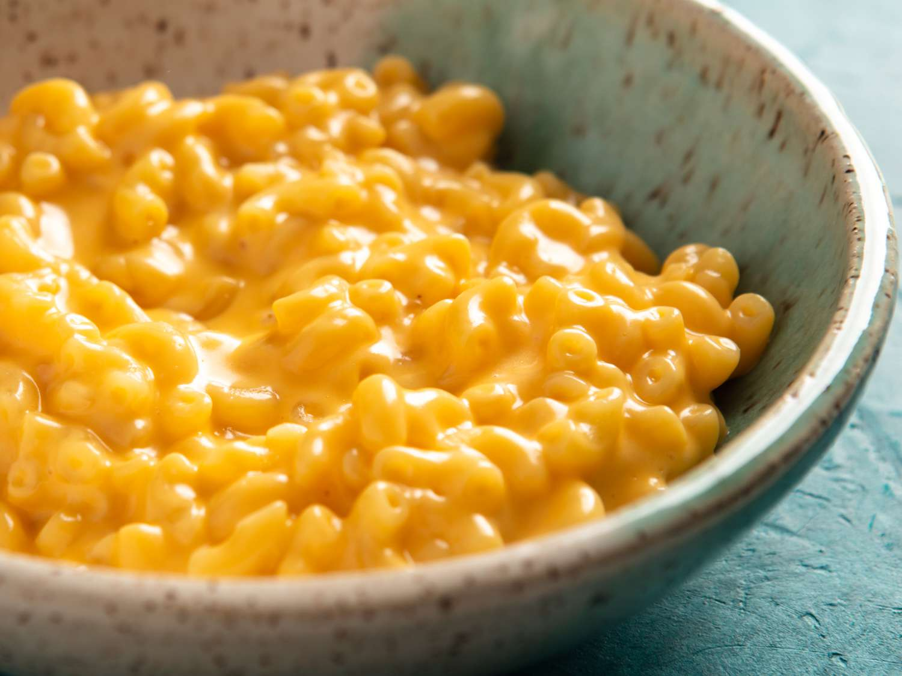

Mac and Cheese

Mac and cheese is a creamy, cheesy comfort food that is beloved by people of all ages.
With its gooey cheese sauce and tender pasta, it’s perfect as a main dish or a side
for any occasion.
Ingredients:
- 300g elbow macaroni
- 4 tablespoons butter
- 4 tablespoons all-purpose flour
- 500ml milk
- 200g grated cheddar cheese
- 50g grated parmesan cheese
- 1 teaspoon mustard powder (optional)
- Salt and pepper
- Breadcrumbs (optional, for topping)
Instructions
- Cook the macaroni:
- Bring a large pot of salted water to a boil.
- Add the macaroni and cook according to package instructions until al dente.
- Drain and set aside.
- Make the cheese sauce:
- Melt the butter in a saucepan over medium heat.
- Whisk in the flour and cook for 1-2 minutes to form a roux.
- Gradually add the milk, whisking constantly to avoid lumps.
- Cook until the sauce thickens, then stir in cheddar cheese, parmesan cheese, mustard powder (if using), salt, and pepper.
- Combine the pasta and sauce:
- Add the cooked macaroni to the cheese sauce and stir until well coated.
- Optional: Bake for a crispy top:
- Preheat your oven to 180°C (350°F).
- Transfer the mac and cheese to a baking dish.
- Sprinkle breadcrumbs on top and bake for 15-20 minutes, or until golden and bubbling.
Enjoy your creamy, cheesy mac and cheese! 🧀